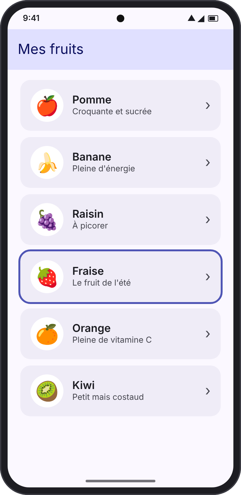
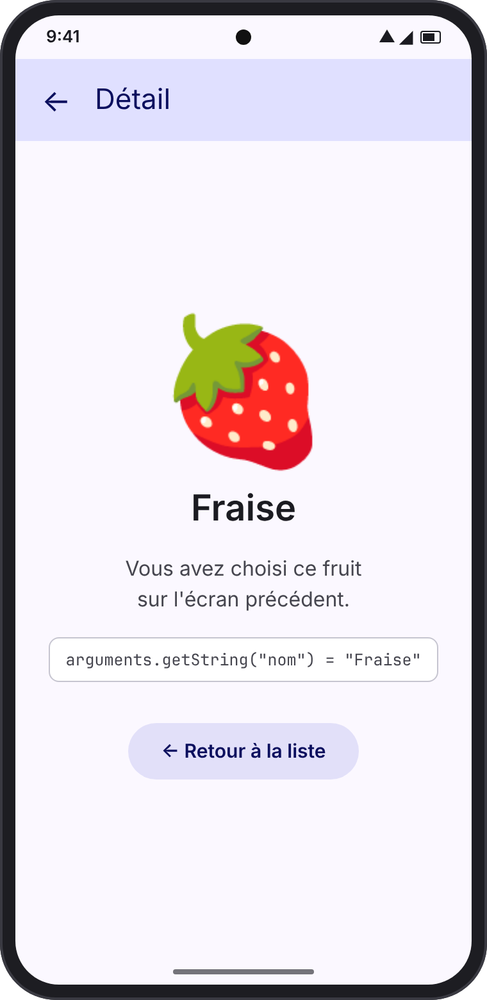
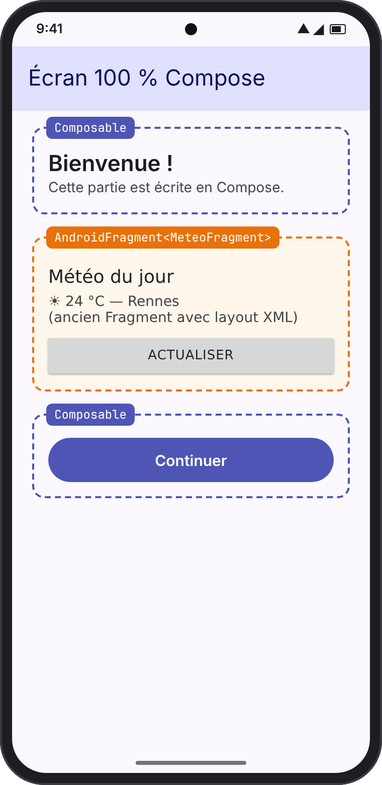
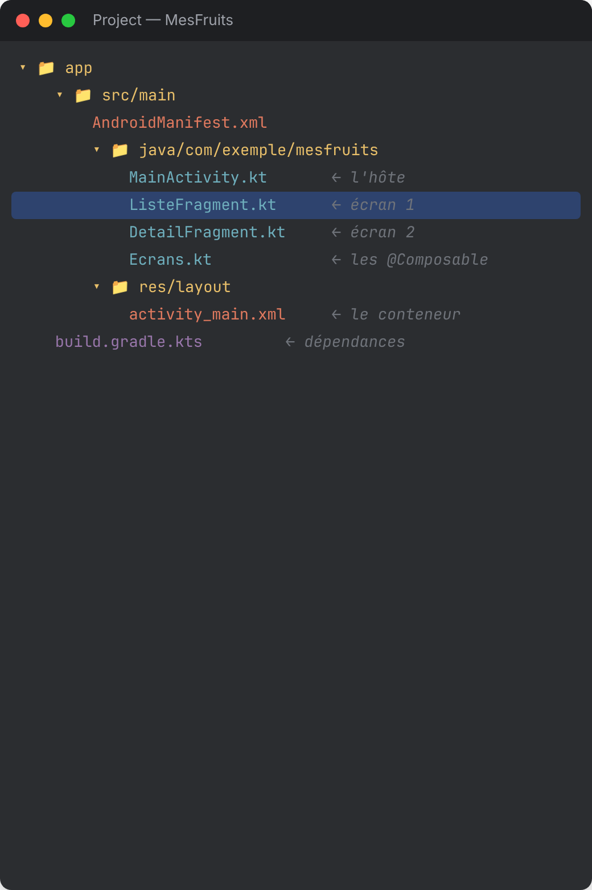
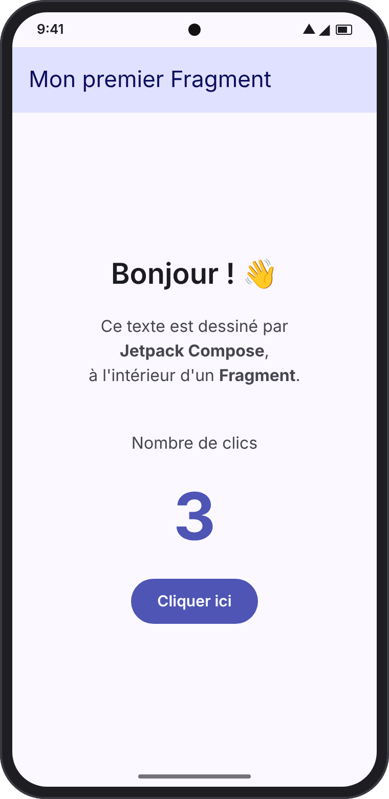
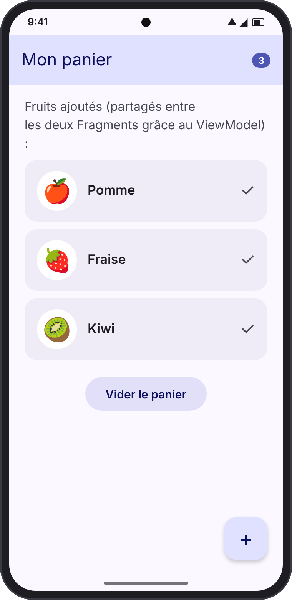
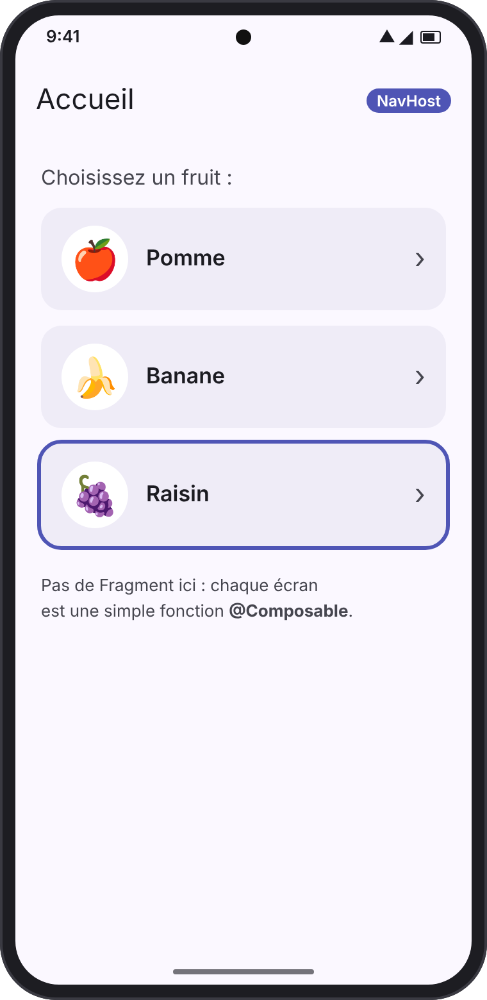
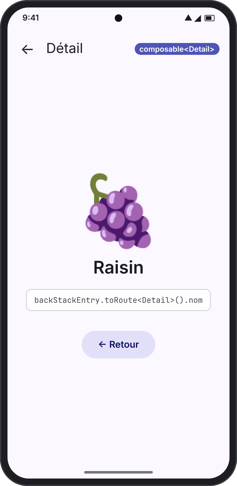

Avant d'écrire du code, posons trois mots de vocabulaire. Imaginez une application comme une maison :
| Élément | Dans la maison | Dans Android |
|---|---|---|
| Activity | La maison elle-même | Le point d'entrée de l'application, une fenêtre plein écran. En général, une seule suffit. |
| Fragment | Une pièce de la maison | Un morceau d'écran réutilisable, avec son propre cycle de vie, placé dans une Activity. On peut changer de pièce sans quitter la maison. |
| Composable | Les meubles et la déco | Une fonction Kotlin annotée @Composable qui dessine l'interface (textes, boutons, listes…). |
Schéma : une Activity contient des Fragments, et chaque Fragment affiche des Composables.
Les Fragments existent depuis 2011, bien avant Compose. Ils ont été pensés pour le système de vues XML. Jetpack Compose, lui, est la façon moderne de construire des interfaces Android.
Aujourd'hui, Google recommande pour les nouvelles applications d'écrire tous les écrans en Compose, avec une seule Activity et Navigation Compose — sans Fragment. Mais vous rencontrerez des Fragments partout :
| Situation | Outil à utiliser | Chapitre |
|---|---|---|
| J'ai un Fragment et je veux y dessiner avec Compose | ComposeView (ou content { }) | 3 à 6 |
| J'ai un écran Compose et je dois y afficher un ancien Fragment | AndroidFragment<T>() | 7 |
| Je démarre un projet neuf | Navigation Compose, pas de Fragment | 8 |
Créez un projet dans Android Studio avec le modèle Empty Activity (qui active déjà Compose). Nommez-le MesFruits. Voici la structure que nous allons obtenir :

Ouvrez app/build.gradle.kts et ajoutez les bibliothèques Fragment dans le bloc dependencies :
dependencies {
// Déjà présentes avec le modèle « Empty Activity »
implementation(platform("androidx.compose:compose-bom:2024.12.01"))
implementation("androidx.compose.material3:material3")
implementation("androidx.activity:activity-compose:1.9.3")
// À AJOUTER pour les Fragments
implementation("androidx.fragment:fragment-ktx:1.8.5") // Fragments + raccourcis Kotlin
implementation("androidx.fragment:fragment-compose:1.8.5") // pont Fragment ⇄ Compose
implementation("androidx.appcompat:appcompat:1.7.0") // AppCompatActivity
implementation("androidx.lifecycle:lifecycle-viewmodel-compose:2.8.7")
}
Cliquez ensuite sur Sync Now (bandeau en haut de l'éditeur) pour télécharger les bibliothèques.
Comme nous utiliserons AppCompatActivity, l'Activity doit avoir un thème AppCompat. Dans AndroidManifest.xml, vérifiez la ligne android:theme :
<activity
android:name=".MainActivity"
android:exported="true"
android:theme="@style/Theme.AppCompat.Light.NoActionBar">
...
</activity>
TopAppBar). Sans cela, vous auriez deux barres de titre l'une sur l'autre.Objectif : créer un Fragment qui affiche un texte et un compteur de clics écrits en Compose.
Un Fragment a besoin d'un emplacement où s'afficher : c'est le FragmentContainerView. On le déclare dans un petit fichier XML.
<androidx.fragment.app.FragmentContainerView
xmlns:android="http://schemas.android.com/apk/res/android"
android:id="@+id/conteneur"
android:layout_width="match_parent"
android:layout_height="match_parent" />
class MainActivity : AppCompatActivity() { override fun onCreate(savedInstanceState: Bundle?) { super.onCreate(savedInstanceState) setContentView(R.layout.activity_main) // On n'ajoute le Fragment qu'au PREMIER lancement if (savedInstanceState == null) { supportFragmentManager.commit { replace(R.id.conteneur, PremierFragment()) } } } }
savedInstanceState == null ?
Quand on tourne le téléphone, Android recrée l'Activity et restaure automatiquement les Fragments. Sans ce test, on en ajouterait un deuxième par-dessus !Un Fragment classique renvoie une View dans onCreateView. L'astuce : renvoyer une ComposeView, une vue spéciale qui sait afficher des Composables.
class PremierFragment : Fragment() { override fun onCreateView( inflater: LayoutInflater, container: ViewGroup?, savedInstanceState: Bundle? ): View { return ComposeView(requireContext()).apply { // Libère Compose quand la vue du Fragment est détruite (voir chap. 9) setViewCompositionStrategy( ViewCompositionStrategy.DisposeOnViewTreeLifecycleDestroyed ) setContent { MaterialTheme { EcranPremierFragment() } } } } }
@OptIn(ExperimentalMaterial3Api::class) @Composable fun EcranPremierFragment() { // "remember" garde la valeur entre deux dessins var clics by remember { mutableIntStateOf(0) } Scaffold( topBar = { TopAppBar(title = { Text("Mon premier Fragment") }) } ) { padding -> Column( modifier = Modifier .padding(padding) .fillMaxSize(), horizontalAlignment = Alignment.CenterHorizontally, verticalArrangement = Arrangement.Center ) { Text("Bonjour ! 👋", style = MaterialTheme.typography.headlineMedium) Text("Ce texte est dessiné par Jetpack Compose," + " à l'intérieur d'un Fragment.") Spacer(Modifier.height(24.dp)) Text("Nombre de clics") Text("$clics", style = MaterialTheme.typography.displayLarge) Button(onClick = { clics++ }) { Text("Cliquer ici") } } } }

fragment-compose fournit une fonction content { } qui crée la ComposeView et choisit la bonne stratégie pour vous :
import androidx.fragment.compose.content class PremierFragment : Fragment() { override fun onCreateView(inflater: LayoutInflater, container: ViewGroup?, savedInstanceState: Bundle?) = content { MaterialTheme { EcranPremierFragment() } } }Dans la suite du cours, nous utiliserons ce raccourci : c'est plus court et on ne peut pas oublier la stratégie.
Objectif : une liste de fruits (écran 1). Quand on touche un fruit, on ouvre un écran de détail (écran 2). Le bouton « Retour » du téléphone ramène à la liste.
Le FragmentManager range les écrans comme une pile d'assiettes : on pose le nouvel écran dessus, et le bouton Retour retire l'assiette du dessus.
Remarquez que le Composable ne connaît pas les Fragments : il reçoit simplement une fonction onFruitClique. C'est une très bonne habitude, qui permettra de le réutiliser au chapitre 8.
data class Fruit(val nom: String, val emoji: String, val description: String) val fruits = listOf( Fruit("Pomme", "🍎", "Croquante et sucrée"), Fruit("Banane", "🍌", "Pleine d'énergie"), Fruit("Raisin", "🍇", "À picorer"), Fruit("Fraise", "🍓", "Le fruit de l'été"), Fruit("Orange", "🍊", "Pleine de vitamine C"), Fruit("Kiwi", "🥝", "Petit mais costaud"), ) @OptIn(ExperimentalMaterial3Api::class) @Composable fun EcranListe(onFruitClique: (Fruit) -> Unit) { Scaffold(topBar = { TopAppBar(title = { Text("Mes fruits") }) }) { padding -> LazyColumn( contentPadding = padding, verticalArrangement = Arrangement.spacedBy(8.dp), modifier = Modifier.padding(horizontal = 16.dp) ) { items(fruits) { fruit -> Card(onClick = { onFruitClique(fruit) }, modifier = Modifier.fillMaxWidth()) { Row(Modifier.padding(16.dp), verticalAlignment = Alignment.CenterVertically) { Text(fruit.emoji, fontSize = 32.sp) Spacer(Modifier.width(16.dp)) Column { Text(fruit.nom, style = MaterialTheme.typography.titleMedium) Text(fruit.description, style = MaterialTheme.typography.bodySmall) } } } } } } }
C'est ici que l'on fait le lien : quand un fruit est cliqué, on demande au FragmentManager d'afficher le DetailFragment.
class ListeFragment : Fragment() { override fun onCreateView(inflater: LayoutInflater, container: ViewGroup?, savedInstanceState: Bundle?) = content { MaterialTheme { EcranListe(onFruitClique = { fruit -> ouvrirDetail(fruit.nom) }) } } private fun ouvrirDetail(nom: String) { parentFragmentManager.commit { setReorderingAllowed(true) // bonne pratique replace(R.id.conteneur, DetailFragment.nouveau(nom)) // on remplace l'écran addToBackStack(null) // pour que « Retour » marche } } }
addToBackStack(null), l'appui sur Retour ferme l'application au lieu de revenir à la liste, car la transaction n'a pas été mémorisée.Et dans MainActivity, on affiche maintenant ListeFragment() au démarrage :
if (savedInstanceState == null) { supportFragmentManager.commit { replace(R.id.conteneur, ListeFragment()) } }
Le DetailFragment est présenté en détail au chapitre suivant, car il doit recevoir le nom du fruit. Pour le bouton « Retour » dessiné à l'écran, une seule ligne suffit :
// Simule l'appui sur le bouton Retour du téléphone requireActivity().onBackPressedDispatcher.onBackPressed() // ou, directement avec le FragmentManager : parentFragmentManager.popBackStack()
| Méthode | Effet |
|---|---|
add(id, fragment) | Ajoute le Fragment par-dessus l'actuel (les deux existent). |
replace(id, fragment) | Retire l'actuel et met le nouveau à sa place. Le plus utilisé. |
remove(fragment) | Retire un Fragment. |
addToBackStack(nom) | Mémorise la transaction pour que « Retour » l'annule. |
popBackStack() | Annule la dernière transaction mémorisée (= Retour). |
Objectif : envoyer le nom du fruit choisi au DetailFragment.
DetailFragment("Fraise"). Quand Android recrée le Fragment (rotation, retour d'arrière-plan…), il appelle le constructeur vide : votre donnée est perdue et l'application plante.La bonne méthode : ranger les données dans les arguments du Fragment, un « sac » (Bundle) qu'Android sauvegarde et restaure automatiquement.
class DetailFragment : Fragment() { companion object { private const val CLE_NOM = "nom" // "Usine" : la seule façon de créer // le Fragment avec ses données fun nouveau(nom: String) = DetailFragment().apply { arguments = bundleOf(CLE_NOM to nom) } } override fun onCreateView( inflater: LayoutInflater, container: ViewGroup?, savedInstanceState: Bundle? ) = content { // On relit la donnée dans les arguments val nom = requireArguments().getString(CLE_NOM)!! val fruit = fruits.first { it.nom == nom } MaterialTheme { EcranDetail( fruit = fruit, onRetour = { parentFragmentManager.popBackStack() } ) } } }
@OptIn(ExperimentalMaterial3Api::class) @Composable fun EcranDetail(fruit: Fruit, onRetour: () -> Unit) { Scaffold( topBar = { TopAppBar( title = { Text("Détail") }, navigationIcon = { IconButton(onClick = onRetour) { Icon(Icons.AutoMirrored.Filled.ArrowBack, contentDescription = "Retour") } } ) } ) { padding -> Column( Modifier.padding(padding).fillMaxSize(), horizontalAlignment = Alignment.CenterHorizontally, verticalArrangement = Arrangement.Center ) { Text(fruit.emoji, fontSize = 96.sp) Text(fruit.nom, style = MaterialTheme.typography.headlineMedium) Text("Vous avez choisi ce fruit sur l'écran précédent.") Spacer(Modifier.height(16.dp)) FilledTonalButton(onClick = onRetour) { Text("← Retour à la liste") } } } }
String, Int, Boolean, Long, Double, leurs listes et tableaux… Pour un objet complet, passez plutôt son identifiant (ex. id = 42) et retrouvez l'objet dans votre base de données ou votre ViewModel. Le Bundle doit rester petit.setFragmentResult("choix", bundleOf("nom" to "Kiwi")) dans le Fragment qui répond, et
setFragmentResultListener("choix") { _, bundle -> ... } dans celui qui attend. Pour un débutant, le ViewModel partagé (chapitre suivant) est souvent plus simple.Objectif : un panier de fruits. On ajoute un fruit depuis l'écran de détail, et le panier se met à jour automatiquement sur un autre Fragment.
Un ViewModel est une classe qui garde les données en mémoire, même quand l'écran tourne. Si deux Fragments demandent le ViewModel de l'Activity, ils reçoivent le même objet : c'est une boîte partagée.
class PanierViewModel : ViewModel() { // Liste observable par Compose val panier = mutableStateListOf<Fruit>() fun ajouter(fruit: Fruit) { if (fruit !in panier) panier.add(fruit) } fun vider() = panier.clear() }
class PanierFragment : Fragment() { // "activityViewModels" = partagé // avec tous les Fragments de l'Activity private val vm: PanierViewModel by activityViewModels() override fun onCreateView( inflater: LayoutInflater, container: ViewGroup?, savedInstanceState: Bundle? ) = content { MaterialTheme { EcranPanier( fruits = vm.panier, onVider = vm::vider ) } } }

Dans DetailFragment, il suffit de déclarer le même ViewModel et d'appeler vm.ajouter(fruit) dans un bouton :
private val vm: PanierViewModel by activityViewModels() // ... Button(onClick = { vm.ajouter(fruit) }) { Text("Ajouter au panier") }
| Déclaration | Durée de vie / partage |
|---|---|
by viewModels() | Propre à ce Fragment uniquement. |
by activityViewModels() | Partagé par tous les Fragments de l'Activity. |
Situation : votre écran est écrit en Compose, mais vous devez y intégrer un Fragment existant (par exemple un vieux MeteoFragment en XML, ou un Fragment fourni par une bibliothèque). C'est le chemin inverse des chapitres précédents.
La bibliothèque fragment-compose fournit pour cela le Composable AndroidFragment.
// Ici, plus besoin de layout XML : // l'Activity affiche directement du Compose. class MainActivity : AppCompatActivity() { override fun onCreate(s: Bundle?) { super.onCreate(s) setContent { MaterialTheme { EcranAccueil() } } } } @OptIn(ExperimentalMaterial3Api::class) @Composable fun EcranAccueil() { Scaffold(topBar = { TopAppBar(title = { Text("Écran 100 % Compose") }) }) { padding -> Column(Modifier.padding(padding).padding(16.dp)) { Text("Bienvenue !", style = MaterialTheme.typography.headlineSmall) // ⬇ Le Fragment, comme un Composable AndroidFragment<MeteoFragment>( modifier = Modifier .fillMaxWidth() .height(180.dp), arguments = bundleOf("ville" to "Rennes") ) Button(onClick = { /* ... */ }, modifier = Modifier.fillMaxWidth()) { Text("Continuer") } } } }
AndroidFragment crée et gère le Fragment pour vous : pas de FragmentManager, pas de commit.arguments sont transmis au Fragment exactement comme au chapitre 5 : il les lit avec requireArguments().onUpdate = { fragment -> ... } permet d'appeler des méthodes du Fragment une fois qu'il est créé.FragmentActivity (ou AppCompatActivity, qui en hérite).AndroidViewBinding avec un FragmentContainerView dans un XML. Cela fonctionne, mais AndroidFragment est aujourd'hui la solution recommandée, beaucoup plus simple.Pour une nouvelle application, on n'utilise plus de Fragments du tout. Chaque écran est un simple Composable, et c'est Navigation Compose qui gère la pile d'écrans et le bouton Retour.
| Avec Fragments | Avec Navigation Compose |
|---|---|
Une classe Fragment par écran | Une fonction @Composable par écran |
FragmentContainerView | NavHost |
FragmentManager.commit { replace(...) } | navController.navigate(...) |
addToBackStack() | Automatique |
Arguments dans un Bundle | Une data class typée |
popBackStack() | navController.popBackStack() |
plugins { // ... plugins existants kotlin("plugin.serialization") version "2.0.21" // même version que votre Kotlin } dependencies { implementation("androidx.navigation:navigation-compose:2.8.5") implementation("org.jetbrains.kotlinx:kotlinx-serialization-json:1.7.3") }
import kotlinx.serialization.Serializable @Serializable object Accueil // écran sans paramètre @Serializable data class Detail(val nom: String) // écran avec un paramètre
"nom" tapées à la main dans un Bundle : si vous vous trompez de type ou oubliez un paramètre, le compilateur vous prévient avant même de lancer l'application.class MainActivity : ComponentActivity() { // plus besoin d'AppCompatActivity override fun onCreate(savedInstanceState: Bundle?) { super.onCreate(savedInstanceState) setContent { MaterialTheme { MonApplication() } } } } @Composable fun MonApplication() { val navController = rememberNavController() NavHost(navController = navController, startDestination = Accueil) { composable<Accueil> { // On RÉUTILISE le Composable du chapitre 4 ! EcranListe(onFruitClique = { fruit -> navController.navigate(Detail(nom = fruit.nom)) }) } composable<Detail> { backStackEntry -> val route: Detail = backStackEntry.toRoute() val fruit = fruits.first { it.nom == route.nom } EcranDetail(fruit = fruit, onRetour = { navController.popBackStack() }) } } }

Accueil
DetailEcranListe et EcranDetail n'ont pas changé d'une ligne. Nous avons seulement supprimé les classes ListeFragment, DetailFragment, le fichier XML et le FragmentManager. C'est pour cela qu'on conseille d'écrire des Composables qui reçoivent des fonctions (onFruitClique, onRetour) plutôt que de manipuler la navigation eux-mêmes : la migration devient un jeu d'enfant.content { } + un Composable (chapitre 3).NavHost et une destination par écran.AndroidFragment seulement pour les Fragments de bibliothèques.Un Fragment passe par plusieurs étapes, un peu comme une pièce que l'on construit, utilise, puis démonte. Voici les principales :
| Méthode | Quand ? | Que faire dedans ? |
|---|---|---|
onCreate | Le Fragment est créé | Lire les arguments, préparer des données (pas d'interface). |
onCreateView | Il faut dessiner l'écran | Renvoyer la ComposeView (c'est ce que nous faisons depuis le début). |
onResume | L'écran est visible et actif | Rarement utile avec Compose. |
onDestroyView | L'écran est retiré (ex. on passe au Fragment suivant) | Compose est libéré automatiquement grâce à la stratégie ci-dessous. |
addToBackStack, le ListeFragment n'est pas détruit (il attend dans la pile) mais sa vue l'est. C'est pourquoi on utilise la stratégie
DisposeOnViewTreeLifecycleDestroyed : Compose est nettoyé en même temps que la vue, ni trop tôt, ni trop tard. La fonction content { } l'applique automatiquement.| Stratégie | Quand l'utiliser |
|---|---|
DisposeOnViewTreeLifecycleDestroyed | Dans un Fragment. Le bon choix 9 fois sur 10. |
DisposeOnDetachedFromWindowOrReleasedFromPool | Valeur par défaut. Adaptée à une ComposeView dans une Activity ou une liste RecyclerView. |
DisposeOnLifecycleDestroyed(lifecycle) | Cas avancés, lorsqu'on veut choisir précisément le cycle de vie. |
remember { } garde une valeur tant que le Composable est affiché, mais la perd si l'on tourne l'écran ou si la vue du Fragment est détruite.rememberSaveable { } survit à la rotation et au retour depuis la pile.// Le compteur du chapitre 3 survit maintenant à la rotation : var clics by rememberSaveable { mutableIntStateOf(0) }
setContentView(R.layout.activity_main) est appelé avant commit, et que l'id (R.id.conteneur) est le bon.if (savedInstanceState == null) { … } (chapitre 3).arguments + fonction usine nouveau(...) (chapitre 5).addToBackStack(null) dans la transaction (chapitre 4).AppCompatActivity mais son thème n'est pas AppCompat. @style/Theme.AppCompat.Light.NoActionBar dans le manifeste (chapitre 2).fragment-ktx et fragment-compose dans Gradle, puis importez androidx.fragment.app.commit et androidx.fragment.compose.content / AndroidFragment. Dans Android Studio, Alt + Entrée sur le mot en rouge ajoute l'import.remember : l'état est perdu quand la vue du Fragment est détruite. rememberSaveable ou un ViewModel (chapitre 9).parentFragmentManager depuis un Composable rend le code difficile à réutiliser. onClic: () -> Unit, et c'est le Fragment qui décide quoi faire (chapitres 4 et 8).Créez un Fragment BonjourFragment qui affiche, en Compose, le texte « Bonjour, <prénom> ! ». Le prénom doit être passé en argument.
class BonjourFragment : Fragment() { companion object { fun nouveau(prenom: String) = BonjourFragment().apply { arguments = bundleOf("prenom" to prenom) } } override fun onCreateView(i: LayoutInflater, c: ViewGroup?, s: Bundle?) = content { val prenom = requireArguments().getString("prenom") MaterialTheme { Text("Bonjour, $prenom !", style = MaterialTheme.typography.headlineLarge) } } } // Dans MainActivity : supportFragmentManager.commit { replace(R.id.conteneur, BonjourFragment.nouveau("Léa")) }
Dans l'application des fruits, ajoutez sur l'écran de détail un bouton « Voir un autre fruit au hasard » qui ouvre un nouveau DetailFragment avec un fruit aléatoire. Que se passe-t-il quand on appuie plusieurs fois sur Retour ?
// Dans DetailFragment, on passe une nouvelle lambda à EcranDetail : onHasard = { val autre = fruits.random() parentFragmentManager.commit { setReorderingAllowed(true) replace(R.id.conteneur, DetailFragment.nouveau(autre.nom)) addToBackStack(null) } }
Réponse : chaque clic empile un nouveau détail. Le bouton Retour revient donc sur chaque fruit vu précédemment, dans l'ordre inverse, avant de revenir à la liste.
Convertissez l'exercice 2 en Navigation Compose (chapitre 8), sans aucun Fragment.
Correctioncomposable<Detail> { entry -> val fruit = fruits.first { it.nom == entry.toRoute<Detail>().nom } EcranDetail( fruit = fruit, onRetour = { navController.popBackStack() }, onHasard = { navController.navigate(Detail(fruits.random().nom)) } ) }
Le comportement de la pile est identique : Navigation Compose empile les destinations comme le faisait addToBackStack.
override fun onCreateView(i: LayoutInflater, c: ViewGroup?, s: Bundle?) = content { MaterialTheme { MonEcran() } }
parentFragmentManager.commit {
setReorderingAllowed(true)
replace(R.id.conteneur, AutreFragment.nouveau("valeur"))
addToBackStack(null)
}
MonFragment().apply { arguments = bundleOf("cle" to "valeur") } // envoyer requireArguments().getString("cle") // lire
private val vm: MonViewModel by activityViewModels()
AndroidFragment<MonFragment>(modifier = Modifier.fillMaxSize(), arguments = bundleOf("cle" to 1))
NavHost(navController, startDestination = Accueil) { composable<Accueil> { EcranAccueil(onClic = { navController.navigate(Detail("x")) }) } composable<Detail> { EcranDetail(it.toRoute<Detail>().nom) } }
fragment-ktx et fragment-compose sont ajoutées et synchronisées.AppCompatActivity (ou FragmentActivity) et a un thème AppCompat.savedInstanceState == null.arguments.addToBackStack.Bravo, vous savez maintenant faire cohabiter Fragments et Compose — et vous en passer ! 🎉